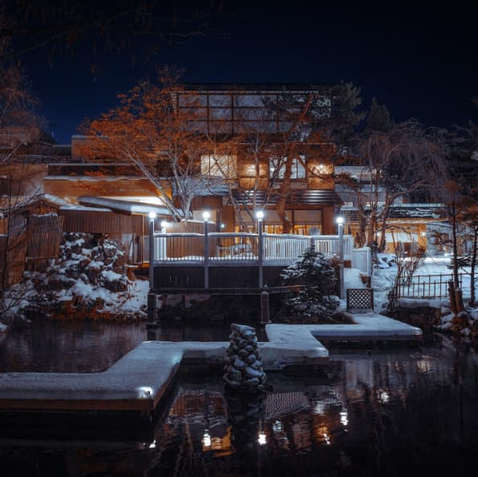
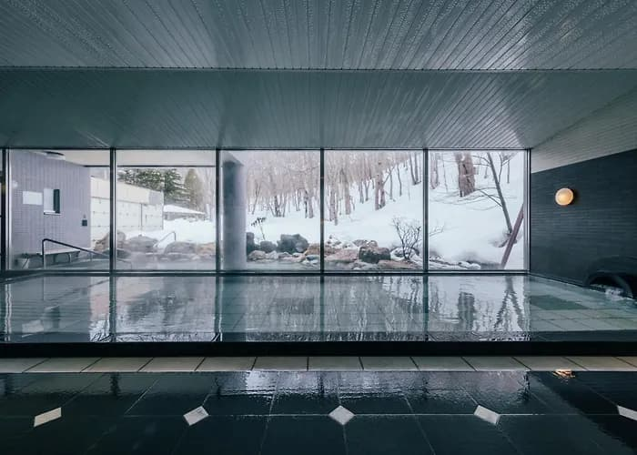
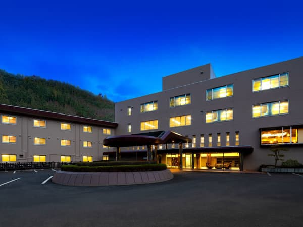
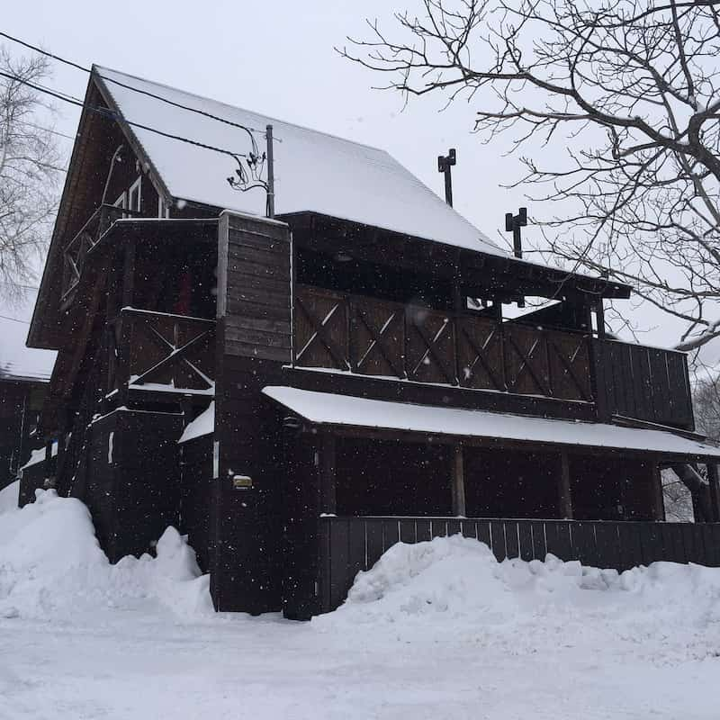

First time on snow
The beginner zone offers space to practise stopping and turning at your own pace. Check which areas are open on the day.
OTARU · HOKKAIDO
Stay close to the slopes. Unwind in an onsen after skiing.
Stay close to the slopes, then relax in Asarigawa Onsen after skiing. Some stays are about a 10-minute walk from the resort. Otaru is another base for a ski day. Enjoy beginner practice areas, varied runs and Sea of Japan views.
Think about your group and the rest of your day, as well as the runs.
The beginner zone offers space to practise stopping and turning at your own pace. Check which areas are open on the day.
Beginner, intermediate, and advanced runs give different skiers options. Check the day's open runs and family facilities before setting out.
You can pair your time on the mountain with Asarigawa Onsen or an Otaru sightseeing stop afterwards.
See the route at a glance, then choose the trip that suits you. Check winter schedules and road conditions before setting out.
1-394 Asarigawa Onsen, Otaru, Hokkaido · Around 800 free spaces
Check the last bus and train for your return, and leave extra time for winter delays.
Want the convenience of staying close to the slopes? The resort lists Asarigawa Onsen Hotel and WINKEL Village at about a 10-minute walk. Choose an inn, hotel or cottage to suit your group and budget.


Onsen hotel with its own guest shuttle last season, too.
Explore stay ↗
About 10 minutes on foot, or 2 minutes by last season’s shuttle.
Explore stay ↗
Private cottages and condos, within walking distance of the slopes.
Explore stay ↗Last season’s guest shuttle ran from Otaru Station via the three hotels above to the resort. Check whether non-guests may ride and confirm the new season’s schedule.
Shuttle details are from 2025–26; confirm 2026–27 service with the operator or hotel. WINKEL was not a listed shuttle stop.
MOPO can arrange lessons at Asarigawa, with dates and pricing confirmed on request. The resort is not yet listed in our online booking form. Message us on WhatsApp or email your preferred date, group size and experience level; we’ll reply with availability, pricing and meeting details.
Please include your preferred date, group size and skiing or snowboarding experience.
Resort details and journey times are based on published information. Check current resort and transport notices before travelling. ASARI SKI RESORT ↗